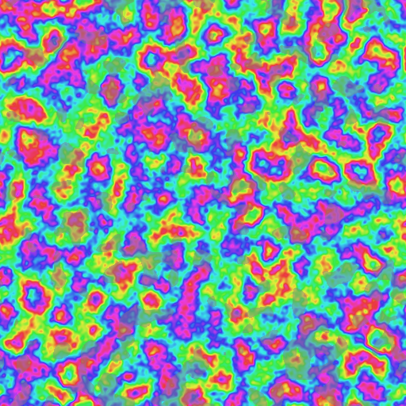
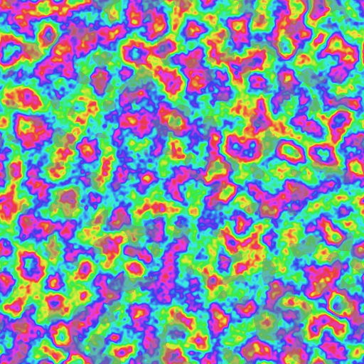
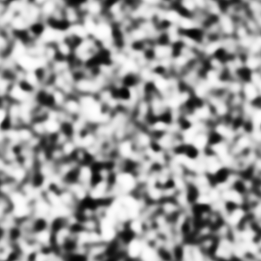

VGT run comparison
B
C



Axial angle
0°45°90°135°180°
0° ≡ 180°: these are the same orientation. The scale is cyclic in meaning; colour is never the only cue, read the degree labels and the difference panel.
Comparability checklist
| Check | Result and basis |
|---|
Method provenance
Words, not ticks: ● verified ◐ declared ◇ inferred ○ unresolved. Hashes here are fictional.
Quantitative summary
Axial statistics (doubled-angle); arithmetic mean invalid. Synthetic values from the shared mock file, not a scientific result.
Statistics use the joint valid set under different masks: not equivalent to either run on its own.